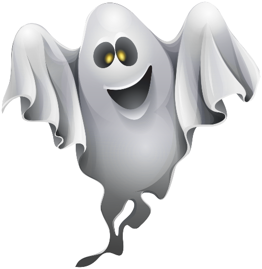

Fase 2
Os espíritos violentos estão concentrados comendo e agora Stinkie tem apenas 30 minutos para achar a chave, sair da masmorra e abrir o Portal dos Mortos!Stinkie percebeu que a chave está perto de um dos espíritos violentos e não sabe como fazer para pegá-la. O que você acha que ele pode fazer? 1- Jogar uma pedra do outro lado da masmorra para distrair os espíritos, pegar a chave e se esconder 2- Esperar o próximo cochilo dos espíritos para não correr riscos